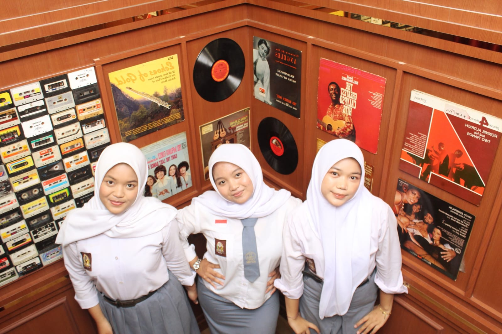
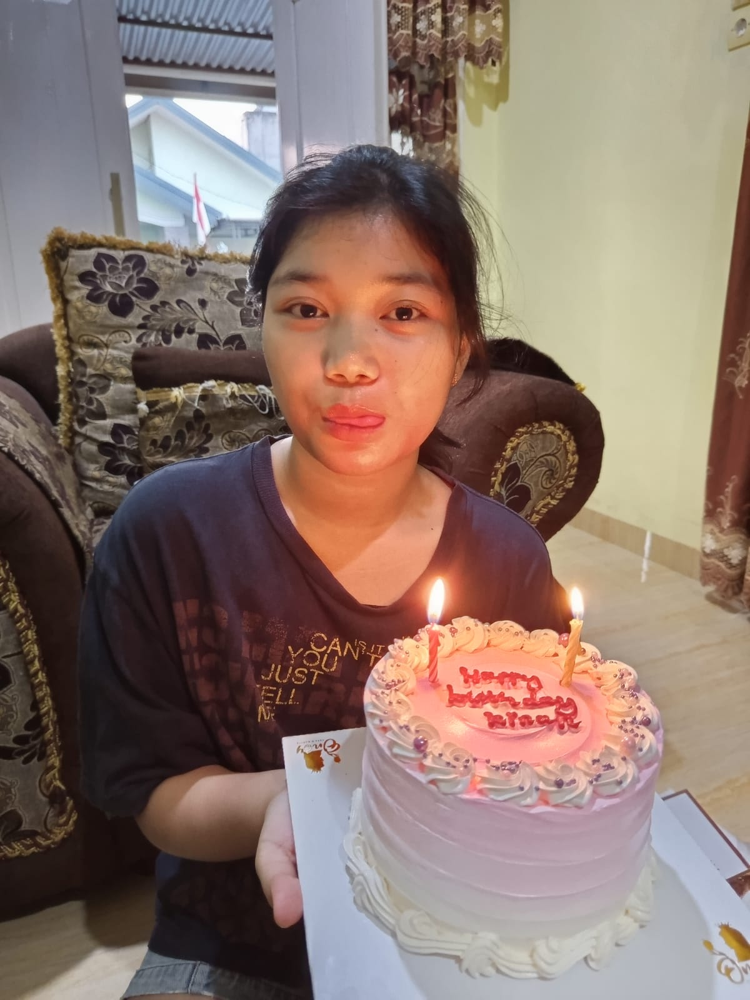

A Little Letter · Untuk Ayudia
UPNY BARAK ✦ #BelaNegara
Haiii, Kinan!
Congrats yaa, officially jadi maba sekarang! 🎉 Soal kabar kinan lolos UTBK tuh, jujur aja agan udah tau duluan jauh sebelum kinan cerita sendiri — tepatnya dua hari setelah gladi perpisahan, dari story WA ayah kinan yang proud banget nge-post screenshot hasil SNBT Kinan. Ngga bakal bohong, agan juga nggak nyangka bakal kinan contact lagi setelah sekian lama.
Ada beberapa hal yang pernah agan lihat sama denger sendiri, yang bikin agan jadi kind of pull away, bahkan makin menjauh dari semua hal yang related sama kinan. But it's okay, that's on the past now — sekarang agan udah nggak avoid lagi, pelan-pelan ngehandle semuanya.
Sebenernya masih banyak banget yang pengen agan certain, tapi let's just save it for later, nunggu waktu yang pas aja. Rasanya tuh mixed feelings gitu — happy, sad, proud, campur aduk pokoknya. Yang pasti, agan seneng banget bisa ngobrol lagi sama kinan setelah sekian lama, walaupun kinan bakal lanjut kuliah di Jogja nanti.
Agan cuma mau kinan tau, se-happy apa agan bisa nyapa kinan lagi setelah lama banget menghilang. Tapi tenang, agan nggak buru-buru kok — agan bakal fokus dulu sama diri agan sendiri, self improvement dulu istilahnya. Soal "kita", let's leave that for another time, nggak usah dipikirin dulu — yang penting sekarang kinan fokus sama apa yang lagi dijalani. No matter how far kinan melangkah nantinya, agan bakal tetep proud — dari achievement paling kecil sampai yang paling gede, kinan tetep keren di mata agan, no cap.


Sekali lagi, congrats yaa — selamat menempuh pendidikan di Jogja, selamat buat usaha yang nggak pernah sia-sia, selamat jadi maba UPNYK #BelaNegara. Agan nggak mau bilang "semoga" di sini, karena agan percaya apa yang diucapkan itu doa — jadi biarin aja semuanya happen dengan sendirinya, tanpa perlu ditunggu-tunggu lagi:
Stay healthy yaa, jangan skip makan, jangan sampai burn out. Semoga dikelilingi sama circle yang seperjuangan dan se-frequency, dilindungi dari hal-hal buruk selama di sana, dan semua goals kinan tercapai dengan gampang. Ayah, ibu, sama keluarga kinan sehat semua. Sama jangan lupa, tetep inget buat berserah sama Allah atas hal-hal yang emang di luar kendali kinan.
— agan